git clone - клонируем репозиторий (плюс команда с гитхаба)
git init - Создает локальный репозиторий на компьютере. В последствии его можно будет запушить на GitHub
git status - выводит на экран есть ли commit, в какой ветке мы находимся и т.д.
git add . - добавить в буфер git изменения
git commit -m "text commit" - сформировать собранные данные в коммит (комент обязательно в двойных кавычках)
git push - запушить все commit-ы
git pull - обновить локальный репозиторий
git log - выводит список коммитов
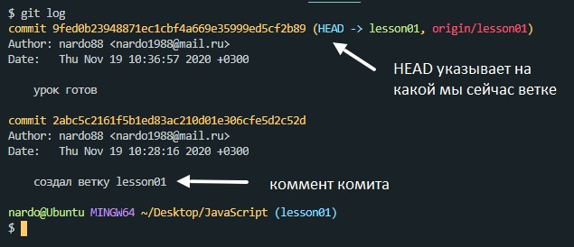git log --oneline - выводит список коммитов в коротком формате
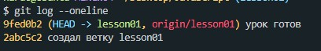git log --all - выводит коммиты всех веток
git log --graph --all - выводит гафически все коммиты
git checkout code - команда возврата к коммиту. вместо code указываем номер коммита (номер смотрим командой git log).
git checkout . - отмена всех изменений, к которым еще не применили команду git add .
git reset HEAD hello.html - отмена изменений у файла hello.html к которому применили команду git add .
git rm --cached index.html - Эта команда говорит о том, что мы отменили наблюдение за файлом index.html после того как применили к нему команду git add
git reset --hard 47dd3dc - удаление коммита с кодом 47dd3dc
Если в проекте есть файлы или папки которые нам не нужно пушить в репозиторий мы можем их перечислить в файле gitignore для того что бы git игнорировал эти файлы. Название этого файла должно быть - .gitignore (название начинается с точки и не имеет расширения). Пушить этот файл в репозиторий НАДО! Пример записи в файле
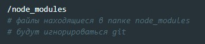git chekout -b style - создали новую ветку с именем style и тут же на нее переключились
git brance readme - создали ветку readme
git chekout -D readme - удалили ветку readme
git branch - выводит список веток
Допустим унас есть две ветки (master и readme). Для того что бы их склеить, мы заходим на ветку master и из под нее вводим вот такую комнда:
git merge readme
Допустим у нас есть локальный репозиторий и пустой репозиторий на GitHub. Первое что нужно сделать это - ввести наши данные что бы локальный git смог связаться с gitHub. для этого вводим команду:
git config --global user.name "nardo88" - эта команда поможет указать имя пользователя
git config --global user.email "nardo1988@mail.ru" - эта команда поможет указать эл. почту пользователя
После этого мы заходим внаш только что созданный репозиторий и находим на главной странице вот такую строчку.
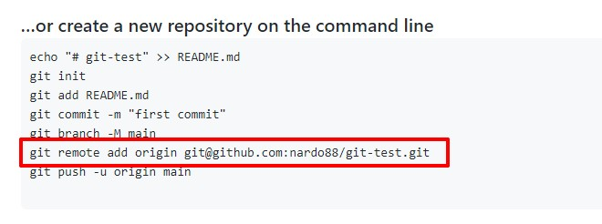Копируем ее и выполняем в терминале. Если на ПК мы используем наш GitHuи впервые то скорее всего вылезет модалка с авторизацией, если мы используем gutHub в n-ый раз то команда просто выполнится. Теперь что бы запушить то что у нас есть в локальном репозитории мы просто выполняем команду:
git push -u origin master
На этом все, дальше работаем как обычно
Репозиторий - раздел где хранится ОДИН проект. В нем хранятся все изменения и сохранения
Commit - Снимок состояния проекта
Master - Основная цепочка состояний проекта
Pulrequest - допустим еще один сотрудник работает над отдельной веткой проекта, когда он ее подготовит он направляет запрос на слияние его ветки с основной, этот запрос и называется Poolrequest
Работать с GitHub можно как через Desktop, так и через Терминал
Что бы репозиторий открывался как сайт название репозитория должно вконце обязательно иметь - github.io
После того как репозиторий создался, заходим в settings, листаем в самый низ и находим там раздел GitHub Pages. Там в разделе Source выбираем branch - master, после этого жмем кнопку save и после того как страница обновилась, заходим туда же и получаем ссылку, по которой репозиторий будет открываться как отдельный сайт
Первое что нужно сделать это авторизоваться. для этого открываем GitBush и вводим там две команды
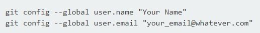Создаем репозиторий на GitHub и копируем код репозитория
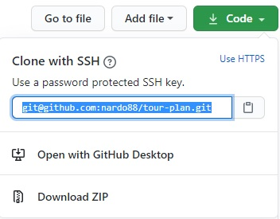После этого открываем пустой VS CODE (не из директории, а просто запускаем его). Переходим во вкладку системы управления доступом и жмем кнопку Клонировать репозиторий
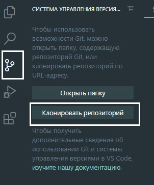Откроется коммандная строка, туда вставляем скопированный код с github и жмем ENTER
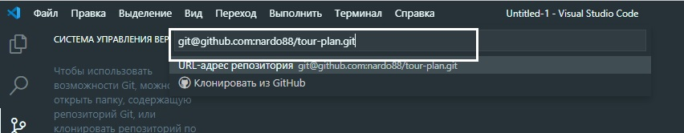После VS Code запросит указать в какую директорию будет клонирован репозиторий. После этого открываем VS Code из той папки куда был скопирован репозиторий.
в VS Code открываем вкладку "Контроля версиями" там будет список отредактированных файлов. Рядом с файлом жмем крестик что бы выполнилась команда git add
После того как прожали все крестики, чуть выше в поле ввода пишем коментарий к комиту, после чего жмем галочку которая находится чуть выше поля ввода.
Desktop приложения github можно скачать по ссылке - https://desktop.github.com/
При первой загрезке откроется окно где предложат добавить репозиторий. В этом окне нам надо выбрать: "clone a repository from the internet", откроется окно гда мы переходим на вкладку "GitHub.com" и жмем кнопку "Sign IN"
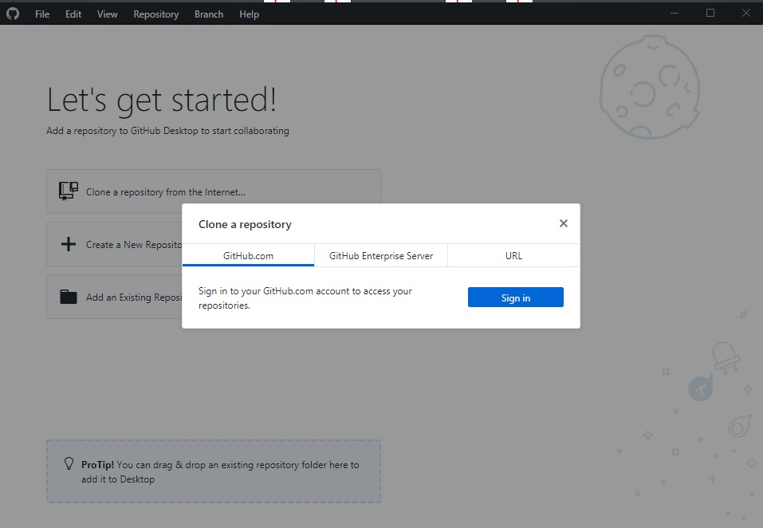Далее вводим логин и пароль учетки от github
После этого в главном окне отобразятся репозитории
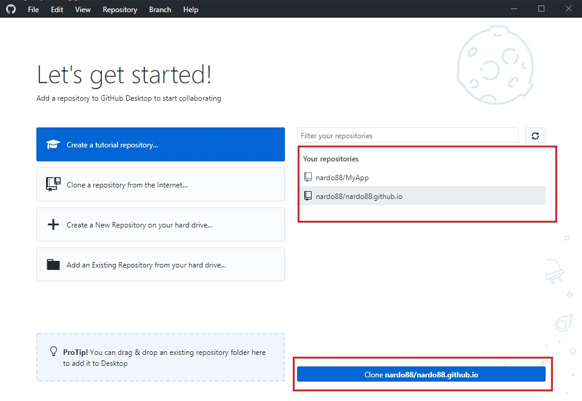Выделяем нужный репозиторий и жмем кнупку нижу "clone"
Откроется окно клонирования репозитория на локальный компьютер, где мы указываем где на компьютере будет создана папка в которую будут скачиваться данные репозитория
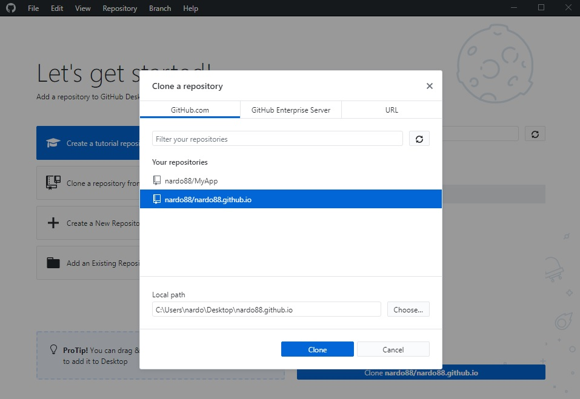После того как мы нажали clone, начнется скачивание данных из репозитория на локальный компьютер

После того как данные репозитория были скачены, на рабочем столе (или там куда указали путь) появилась папка со всеми файлами, которые были на репозитории.
Теперь эту папку можно добавить в VS Code и работать с файлами
В папке на локальном компьютере, (которая является локальным хранилищем для нашего репозитория), мы создадим еще одну папку и там уже состадим файл index.html
Теперь если посмотреть на эту папку и файл то в VS Code они подсвечены зеленым

Это значит, что этот файл и папка не добавлены в репозиторий на GitHub и если теперь открыть Desktop GitHub, то мы увидим уведомление о том, что имеется 1 измененный файл, который не залит на github
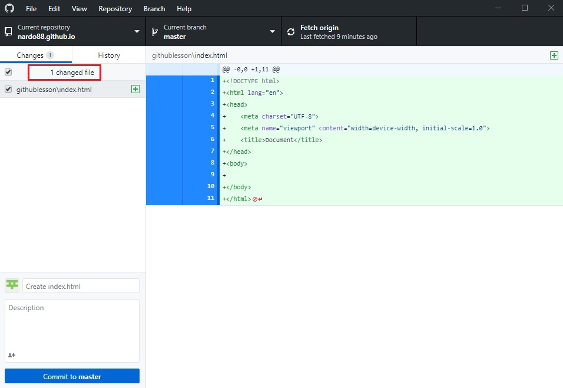Что бы выполнить сохранение на GitHub нам надо ниже в Desktop GitHub создать новый Commit. Чуть нижу на рисунке показано где вводится название Commit, а так же можно указать комментарий к Commit. После нажатия на кнопку Commit to master папка и файл сохранятся в Desktop GitHub
Но это не значит что наши файлы улетели на github.io, потому что эти изменения мы сделали пока что только на локальной машине. Для того что бы эти изменения отправились на сервер github нам надо сделать PUSH. Для этого в верхней части окна жмем кнопку "Push origin"
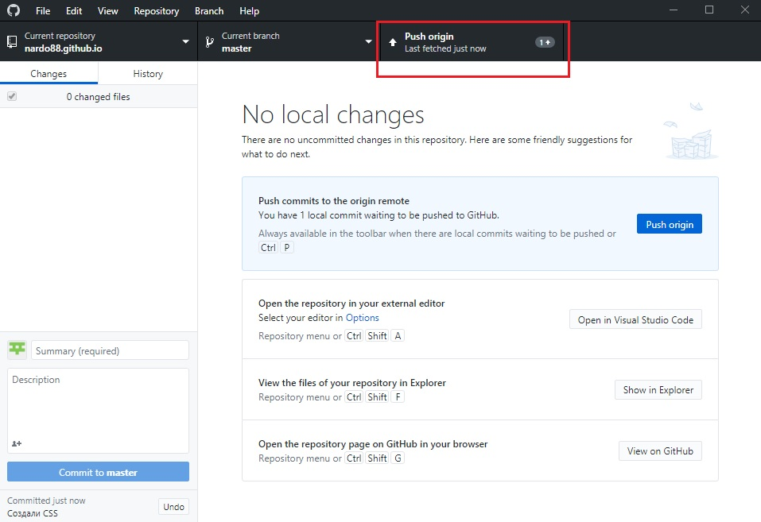После этого синхронизация произойдет и все изменения будут отображены на сервере github
Теперь каждый раз когда мы отредактировали файл, сначала Commit-им его и Push-им на сервер github
Переходим на вкладку history, выбираем в списке тот commit кторый нам нужен, жмем по нему ПКМ и выбираем Revert this commit
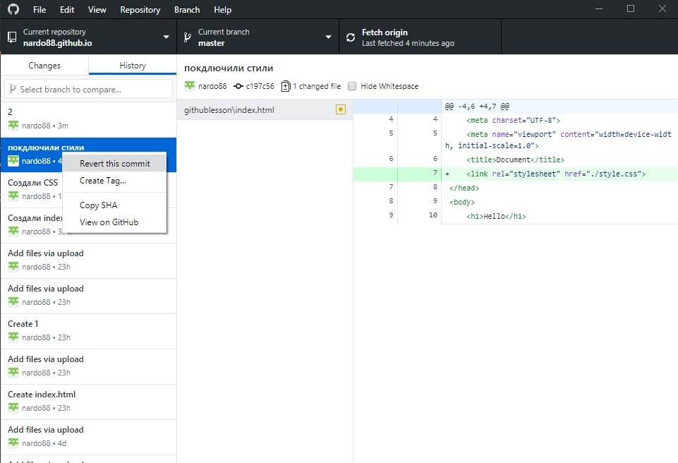Если после этого посмотреть на наши файлы, то они будут с тем содержимым которое у нас было на тот период commit-а
Для публикации этих изменений (отката назад) так же Push-им все на серв
Для чего это нужно? Допустим мы заходтели опробовать какую-нибудь фичу на нашем проекте, но что бы не ломать то что уже хорошо сделано, мы можем создать новую ветку, поиграться на ней и если ничего не получилось, то не применять ее к основной ветке MASTER
Для создания ветки жмем кнопку Current branch
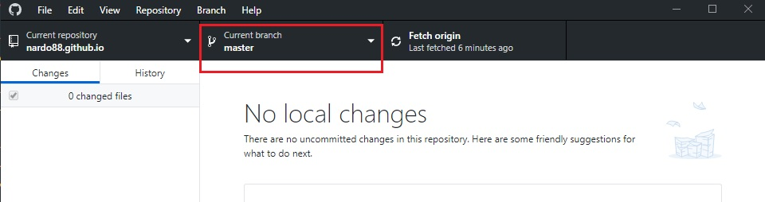В поле поиска вводим имя новой ветки и жмем кнопку create new branch
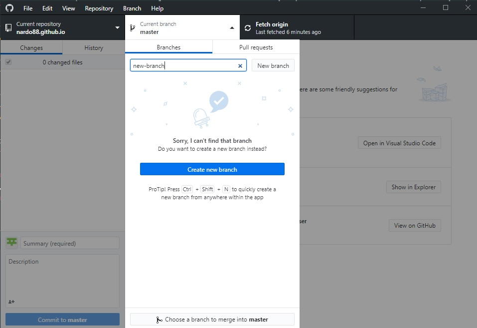После того как ветка создана, мы возвращаемся в VS Code и видим что наши файлы переключились на новую ветку:
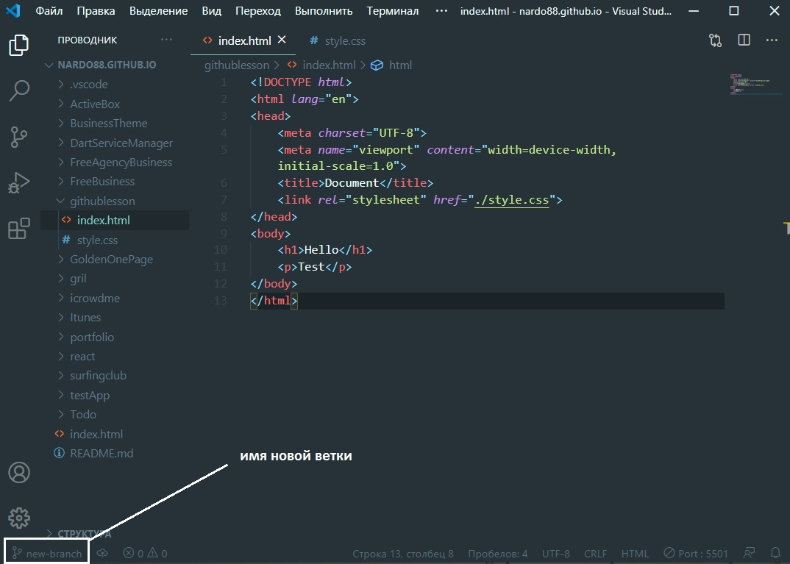В новой ветке мы так же можем создавать commit, ее так же публиковать на github.io, но эти изменения не будут применяться в основной ветке MASTER. Например если в Desktop GitHub снова выбрать ветку MASTER, но все изменения которые были в новой ветке, они пропадут (т.к. они хрянятся в своей ветке).
Как слить две ветки (MASTER и NEW-BRANCH) в одну
Идем по меню Branch - Create pull request.
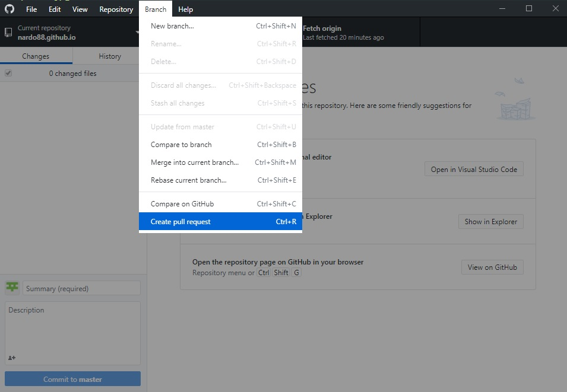 откроется страница github и здесь в открывшемся окне мы видим какие две ветки мы соединяем. Если все верно, то жмем кнопку Create pull request 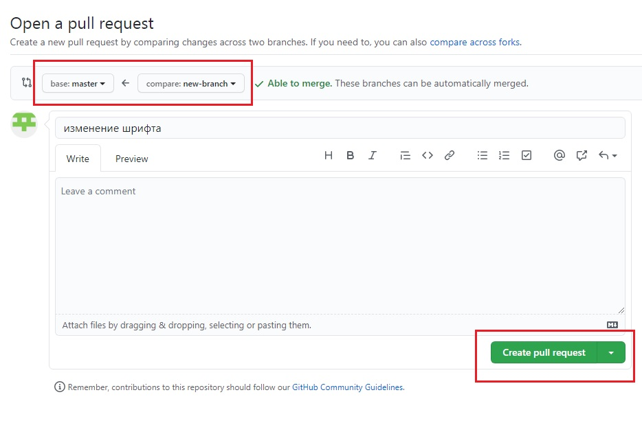После этого необходимо подтвердить слияние, для этого в новой странице жмем Merge pull request, а затем жмем confirm merge, после чего мы получаем сообщение: Pull request successfully merged and closed
После того как ветки были объединены, мы возвращаемся в Desktop и жмем кнопку Fetch origin для того что бы локальный репозиторий синхронизировался с удаленным (на github.io)
Для того что бы работать с github через терминал, на компьютере должен быть установлен GIT. Качаем отсюда - https://git-scm.com/
Создаем пустую папку? после чего надо открыть терминал из этой папки, для этого открываем только что созданную папку, жмем ПКМ по пустому полю и выбираем Git Bush here. Откроется терминал:
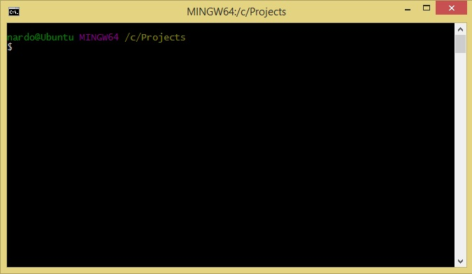Первое что нам надо сделать это в bush прописать такую команду:
$ ssh-keygen -t rsa -b 4096 -C "your_email@example.com"
Email указан в качестве примера, где смотреть какой адрес @ у нас привязан к учетке? Заходим на github жмем по иконке с аватаркой и в выпадающем списке выбираем settings. Далее в открывшейся странице переходим на вкладку Emails и в самом верху видим адрес электронной почты
Для того что бы скопировать текст команды в bush мы просто жмем в верхнем левом углу по значку терминала и выбираем изменить - вставить
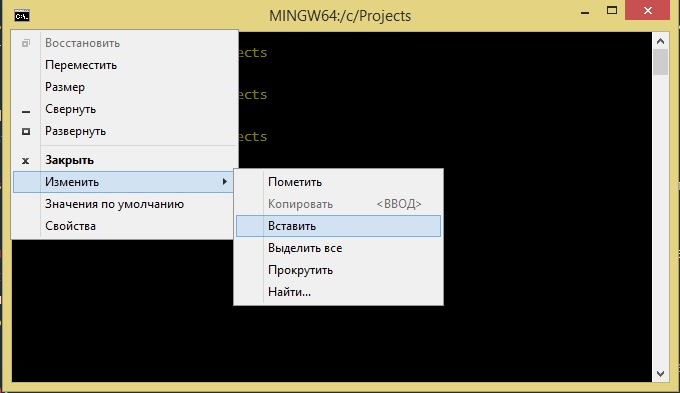После того как ввели команду мы получаем вот такой ответ:
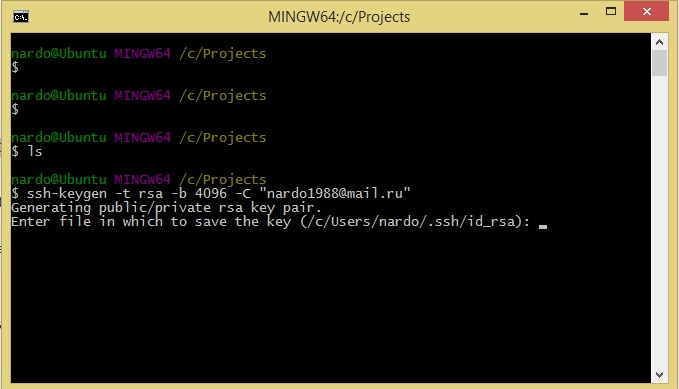Здесь говорится что у нас есть стандартный файл в папке SSH и он называется id_rsa. Просто жмем ENTER
Дальше мы получим вот такое сообщение:
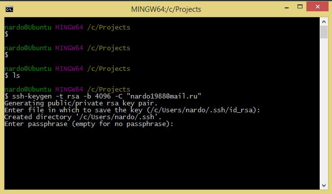Здесь надо указать пароль, можно не вводя нажать ENTER (пароль будет пустой). После двух попыток ввода пустого пароля выйдет вот такой результат:
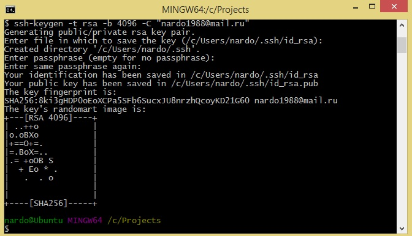SSH ключ был сгенерирован. Теперь необходимо добавить ключ SSH в SHH агент, для этого вводим вот такую команду:
eval $(ssh-agent -s)
мы получим вот такой результат - agent pid 1866
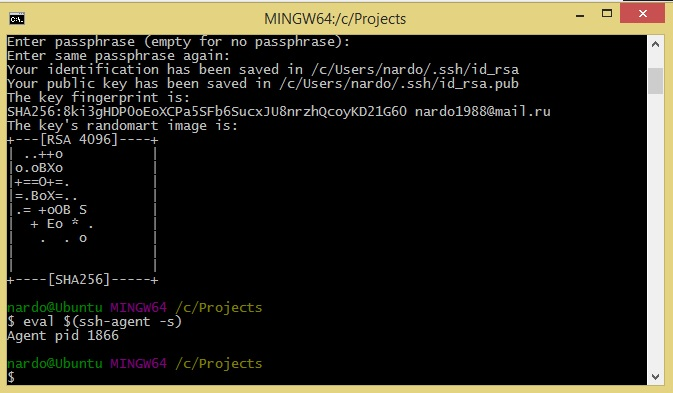После получения pid добавляем SSH в SSH агент с помощью команды:
ssh-add ~/.ssh/id_rsa
Получим вот такой результат
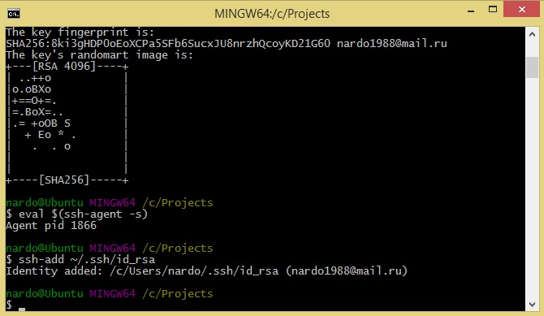Теперь этот SSH ключ нам надо добавить в github акаунт. Для этого вводим в bush команду
clip < ~/.ssh/id_rsa.pub
После ввода это команды в буфер скопировался наш SSH ключ, теперь заходим на страничку в github в настройки акаунта, открываем вкладку SSH and GPC keys, жмем new SSH key и копируем туда наш ключ. Жмем кнопку подтверждения, зтем github запросит пароль от акаунта, вводим и все.
Теперь для того что бы склонировать наш репозиторий мы заходим на страницу репозитория (важно что бы там был создан хотя бы один пустой файл), нажимаем на кнопку Code и копируем строчку для клонирования репозитория с помощью SSH

Далее в консоли пишем команду:
git clone
И далее дописываем то что скопировали с сайта github
В результате репозиторий будет скопирован в ту область откуда запущен bush git
Теперь необходимо в bash перейти в папку с репозиторием (cd 'name_folder')
Затем открываем VS Code и добавляем в него папку с проектом
git status - это команда в bush которая выводит на экран есть ли commit, в какой ветке мы находимся и т.д.
Допустим мы внесли какие-то изменения в нашем проекте, как добавить commit? очень просто в bush вводим команду:
В качестве file мы указываем имя нашего файла который был отредактирован
Но что если у нас было отредактировано 500 файлов и что все их перечислять? нет в этом случае можно использовать такую команду:
git add .
Точка означает что коммитить будут все файлы
Теперь надо отправить commit, для этого вводим команду:
git commit -m "text commit"
В кавычках указываем комментарий к commit
И уже теперь push-им commit на серв
git push
Для того что бы создать новую ветку вводим команду:
git checkout -b name-branch
name-branch - это произвольное имя новой ветки
Теперь если ввести команду git branch git нам покажет в какой ветке мы сейчас находимся
Для того что бы переключиться на другую ветку, мы вводим:
git checkout master
В данном примере мы переключились на ветку master
Что бы запушить нашу новую ветку на серв мы так же сначала вводим git add ., затем git commit, после вводим git push --set-upstream origin new-branch
В случае создания новой ветки git push выглядит длинее (вообще git сам подскажет как должна выглядеть команда)
Что бы склеить наши две ветки сначала пушим все ветки на сервак, после чего заходим на github и видим вот такую кнопку:
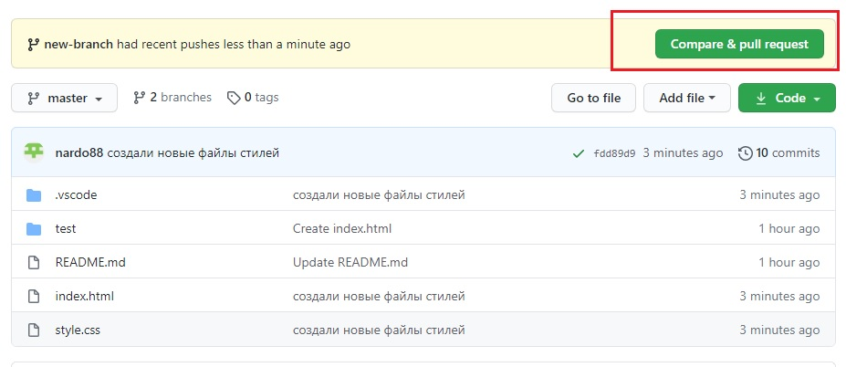Жмем на нее далее жмем на кнопку Create pull request, подтверждаем его и разрешаем, после этого ветки объединятся
git pull - команда для обновления локальног репозитория
Для удаления ветки вводим команду git branch --delete new-branch